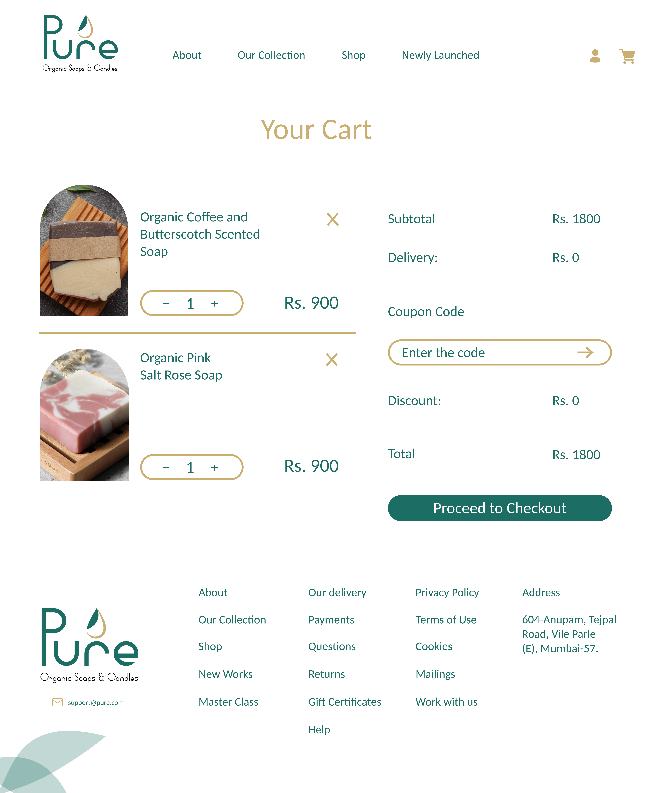
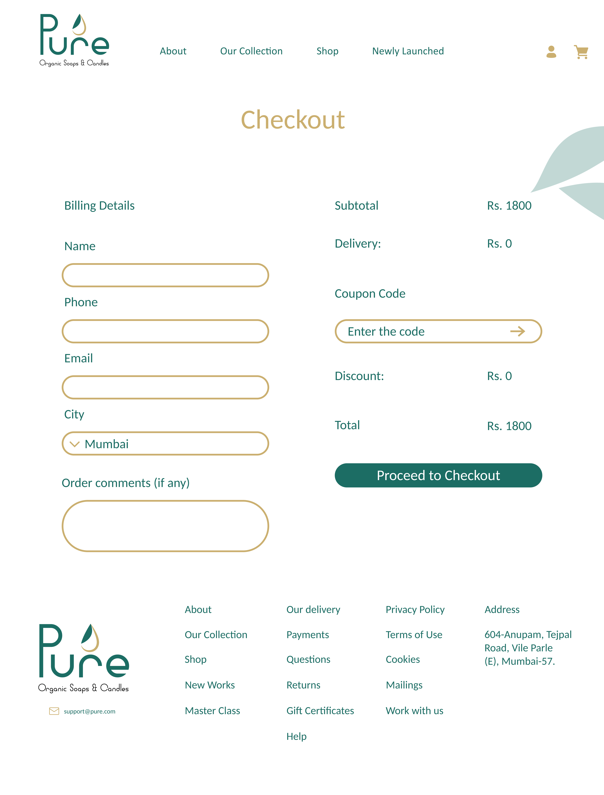

WEB DESIGN / E-COMMERCE
Pure
A nature-inspired digital shopping experience for organic soaps and candles.

Project Type
E-commerce Website
Design Focus
Visual Design & UI/UX
Industry
Organic Lifestyle
About the Project
Pure is a concept for an organic soap and candle brand, exploring a calming, nature-inspired visual identity and a cohesive e-commerce website experience. The design uses botanical imagery, earthy tones, and clean layouts to communicate a natural and welcoming brand personality.
MIDNIGHT CHAMPION
02 / VISUAL EXPLORATION
Visual Moodboard
Exploring natural textures, earthy tones, botanical elements, and warm lighting to establish Pure's visual direction.

03 / FINAL DESIGNS
Website Screens
Exploring Pure's digital shopping experience, from discovering products to checkout.
Discover Pure
Introducing the brand through natural imagery, curated collections, and product storytelling.

Explore the Collection
Showcasing organic soaps and candles through a clean, visually engaging product browsing experience.

Product Experience
Highlighting product features, imagery, and essential information to support confident purchasing decisions.

Your Selections
Simplifying the shopping experience through an organized layout for reviewing and managing selected products.

Seamless Checkout
Creating a smooth and intuitive checkout experience through clear form fields and a streamlined purchase process.
